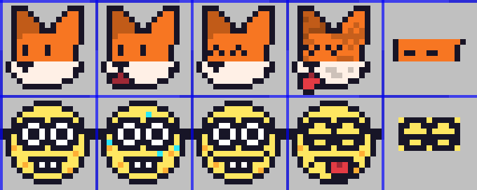
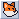
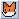
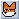

jumbledFox's website.
Minesweeper
This is a game of minesweeper that took around TWO MONTHS for me to make! Two whole months!!!
I learned an awful lot in those two months however, and rewrote it from the ground up a good 3 or so times, so I'd say they weren't two wasted months :3
Left click to dig, right click to flag, and either middle mouse or left + right click to chord!
(pleeeaase, if anyone knows how to disable middle mouse autoscrolling on the minesweeper iframe tell me!!!)
About
This was made in Rust, with the Macroquad framework, The source is on Github!
The hardest part about this project was definitely the GUI. I eventually settled on what's called an 'immediate-mode' GUI, which is basically where everything is rebuilt every frame. This made the code so much easier at the cost of some performance, but meh, it's not the 80s anymore! At least this site isn't mining bitcoin on your cpu... or is it?
Explosions
One part I'm really proud of is the cool circular explosion effect!
This was achieved with a bunch of cool optimisations, such as using the squared distance rather than a pesky and slow square root calculation, precalculating all of the distances to the center for each bomb, and using an IndexMap (ordered HashMap) and sorting it by distance to make sure I check the minimum amount of bombs as possible when updating the radius.
Check out the source here, I'm really proud of it!
The Face In The Button
My code allows me to easily add faces, shown below is part of the spritesheet for them!

I would add more faces (and may do in the future!) but drawing is hard :c
Originally there was just gonna be a fox in the button, here are some of my first attempts at drawing it....

Not a fan of this one, too lumpy!
The shocked version of the one above, for when you were about to dig up a tile
This one's literally just eyes lol
Ehh... better, but still not very good!!
The fox was originally going to look back and forth, this proved to be too distracting and didn't look very good however, so I removed it.

They were also going to be much cooler when you won, sporting an epic pair of shades! However I didn't think it was as cute as the '^^' eyes present in the final release :3

I used this codepen project's code to add a fullscreen button, thank you Stephen Cronin!
Overall this project was a brilliant learning experience, I'm so excited to make more web-based things with Macroquad :3
May 2024